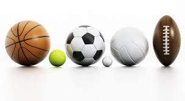
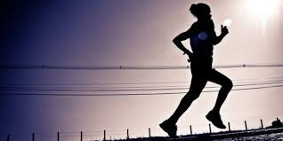

Les familles de sports
Les sports tels qu'on les connait tous ne sont pas tous les memes, ils se jouent differemment et on des régles differentes,
et aussi un nombre de joueur qui différe, tout d'abord on a 2 grands types de sports, les sports en solo et les sports en equipes, dans le premier cas on retrouve des duels de 1 vs 1 , c'est le cas par example dans le cas des sports de combat, dans le 2eme cas on a des equipes entiéres qui jouent entre elles, ce type de sports requiert des qualites tel que le travail d'équipe.

Les différents sports
Maintenant qu'on a ecrit les 2 grandes familles de sports interessons nous a une separation de ces derniers plus précise !
Dans les sports on a plusieures catégories, example les sports a balle, les sports de combat,et les sports de condition physique tel que l'athlétisme et la musculation, on retrouve aussi des sports saisonniers tels que les sports d'hiver, d'été et enfin les sports de salle, d'eau ainsi que les sports extreme qui eux peuvent etre dangereux au debut sans encadrement.

Commentaires
Pour tout résumer on a des centaines de sports qu'on peut pratiquer et tout ces sports sont divisés en plusieures catégories qui elles memes sont liées ou incluses avec d'autres catégories. Pour mes conseils faire du sport est une chose de trés importante car en effet c'est en faisant du sport qu'on a un bon moral, une bonne activité pour se décontracter et avant tout un des meilleurs moyens pour rester en bonne santé, c'est pourquoi je conseil a tout mes lecteurs de faire beaucoup de sports !